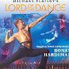

Celtic Lyrics Corner > Shows > Lord Of The Dance
|  |
Lord Of The Dance
(1996) |
| Tracks : |
1. Cry Of The Celts
2. Suil A Ruin 3. Celtic Dream 4. Warriors 5. Gypsy 6. Breakout 7. The Lord Of The Dance 8. Spirit In The New World 9. Fiery Nights 10. Lament 11. Siamsa 12. Our Wedding Day 13. Stolen Kiss 14. Nightmare 15. Victory Bonus Tracks: 16. Cry Of The Celts 17. The Lord Of The Dance |